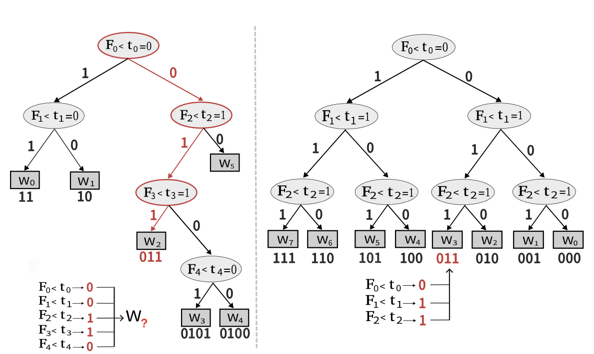

Songlei Wang 王松磊PhD student
Harbin Institute of Technology, Shenzhen,
|
|
| MAGO: Maliciously Secure Subgraph Counting on Decentralized Social Graphs Songlei Wang, Yifeng Zheng, Xiaohua Jia, Qian Wang, and Cong Wang IEEE Transactions on Information Forensics and Security (TIFS) |
|
| PrigSim: Towards Privacy-Preserving Graph Similarity Search as a Cloud Service Songlei Wang, Yifeng Zheng, Xiaohua Jia, Hejiao Huang, and Cong Wang IEEE Transactions on Knowledge and Data Engineering (TKDE) |
|
| SecGNN: Privacy-preserving graph neural network training and inference as a cloud service Songlei Wang, Yifeng Zheng, and Xiaohua Jia IEEE Transactions on Services Computing (TSC)
Songlei Wang, Yifeng Zheng, Xiaohua Jia, and Xun Yi IEEE Transactions on Knowledge and Data Engineering (TKDE)
|
|
| SecDR: Enabling Secure, Efficient, and Accurate Data Recovery for Mobile Crowdsensing Yifeng Zheng, Menglun Zhou, Songlei Wang, Hejiao Huang, Xiaohua Jia, Xun Yi, and Cong Wang IEEE Transactions on Services Computing (TSC) |
|
|  | Privet: A Privacy-Preserving Vertical Federated Learning Service for Gradient Boosted Decision Tables Yifeng Zheng, Shuangqing Xu, Songlei Wang, Yansong Gao, and Zhongyun Hua IEEE Transactions on Services Computing (TSC) |
| PPTA: A location privacy-preserving and flexible task assignment service for spatial crowdsourcing Menglun Zhou, Yifeng Zheng, Songlei Wang, Zhongyun Hua, Hejiao Huang, Yansong Gao, and Xiaohua Jia Computer Networks |
| PeGraph: A system for privacy-preserving and efficient search over encrypted social graphs Songlei Wang, Yifeng Zheng, Xiaohua Jia, and Xun Yi IEEE Transactions on Information Forensics and Security (TIFS) |
|
| OblivGM: Oblivious attributed subgraph matching as a cloud service Songlei Wang, Yifeng Zheng, Xiaohua Jia, Hejiao Huang, and Cong Wang IEEE Transactions on Information Forensics and Security (TIFS) |
|
| SecSkyline: Fast privacy-preserving skyline queries over encrypted cloud databases Yifeng Zheng, Weibo Wang, Songlei Wang, Xiaohua Jia, Hejiao Huang, and Cong Wang IEEE Transactions on Knowledge and Data Engineering (TKDE) |
| Efficient lane-level map building via vehicle-based crowdsourcing Jiangang Shu#, Songlei Wang#, Xiaohua Jia, Weizhe Zhang, Ruitao Xie, and Hejiao Huang IEEE Transactions on Intelligent Transportation Systems (TITS) |